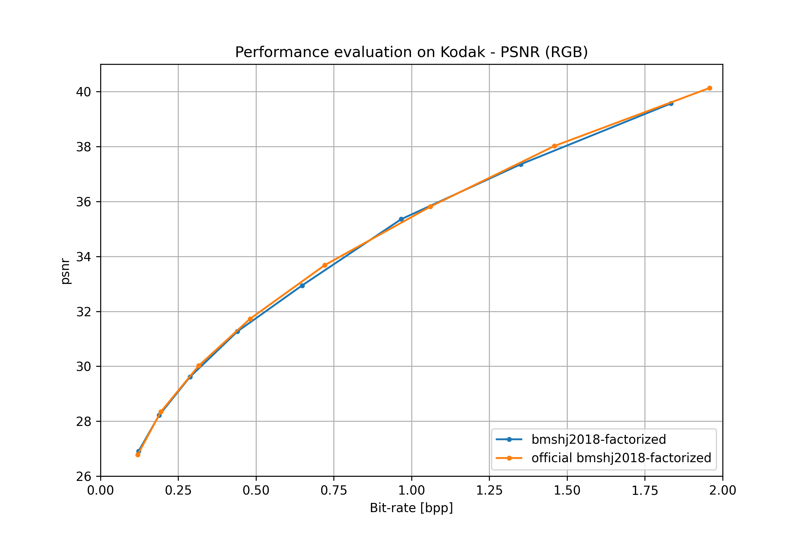
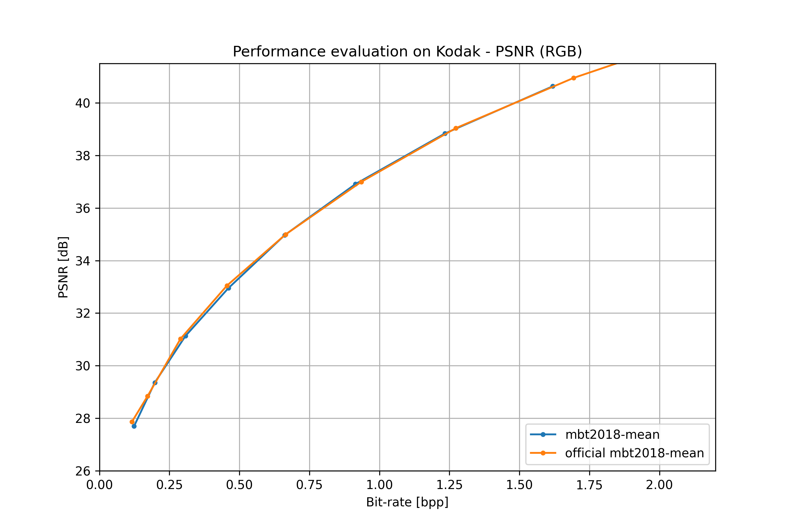

Image compression#
This is the list of the pre-trained models for end-to-end image compression available in CompressAI.
Currently, only models optimized w.r.t to the mean square error (mse) computed on the RGB channels are available. We expect to release models fine-tuned with other metrics in the future.
Pass pretrained=True to construct a model with pretrained weights.
Instancing a pre-trained model will download its weights to a cache directory. See the official PyTorch documentation for details on the mechanics of loading models from url in PyTorch.
The current pre-trained models expect input batches of RGB image tensors of shape (N, 3, H, W). H and W are expected to be at least 64. The images data have to be in the [0, 1] range. The images should not be normalized. Based on the number of strided convolutions and deconvolutions of the model you are using, you might have to pad the input tensors H and W dimensions to be a power of 2.
Models may have different behaviors for their training or evaluation modes. For
example, the quantization operations may be performed differently. You can use
model.train() or model.eval() to switch between modes. See the PyTorch
documentation for more information on
train
and eval.
Training#
Unless specified otherwise, networks were trained for 4-5M steps on 256x256 image patches randomly extracted and cropped from the Vimeo90K dataset [xue2019video].
Models were trained with a batch size of 16 or 32, and an initial learning rate of 1e-4 for approximately 1-2M steps. The learning rate of the main optimizer is then divided by 2 when the evaluation loss reaches a plateau (we use a patience of 20 epochs). This can be implemented by using PyTorch ReduceLROnPlateau learning rate scheduler.
Training usually take between one or two weeks to reach state-of-the-art performances, depending on the model, the number of channels and the GPU architecture used.
The following loss functions and lambda values were used for training:
Metric |
Loss function |
|---|---|
MSE |
\(\mathcal{L} = \lambda * 255^{2} * \mathcal{D} + \mathcal{R}\) |
MS-SSIM |
\(\mathcal{L} = \lambda * (1 - \mathcal{D}) + \mathcal{R}\) |
with \(\mathcal{D}\) and \(\mathcal{R}\) respectively the mean distortion and the mean estimated bit-rate.
Quality |
1 |
2 |
3 |
4 |
5 |
6 |
7 |
8 |
|---|---|---|---|---|---|---|---|---|
MSE |
0.0018 |
0.0035 |
0.0067 |
0.0130 |
0.0250 |
0.0483 |
0.0932 |
0.1800 |
MS-SSIM |
2.40 |
4.58 |
8.73 |
16.64 |
31.73 |
60.50 |
115.37 |
220.00 |
Note
MS-SSIM optimized networks were fine-tuned from pre-trained MSE networks (with a learning rate of 1e-5 for both optimizers).
Note
The number of channels for the convolutionnal layers and the entropy
bottleneck depends on the architecture and the quality parameter (~targeted
bit-rate). For low bit-rates (<0.5 bpp), the literature usually recommends 192
channels for the entropy bottleneck, and 320 channels for higher bitrates.
The detailed list of configurations can be found in
compressai.zoo.image.cfgs.
Note
For the cheng2020_* architectures, we trained with the first 6 quality parameters.
Models#
Warning
All the models are currently implemented using floating point operations only. As such operations are not reproducible and encoding/decoding on different devices is not supported. See the following paper, “Integer Networks for Data Compression with Latent-Variable Models” by Ballé et al., for solutions to implement cross-platform encoding and decoding.
bmshj2018_factorized#
Original paper: [bmshj2018]
- compressai.zoo.bmshj2018_factorized(quality, metric='mse', pretrained=False, progress=True, **kwargs)[source]#
Factorized Prior model from J. Balle, D. Minnen, S. Singh, S.J. Hwang, N. Johnston: “Variational Image Compression with a Scale Hyperprior”, Int Conf. on Learning Representations (ICLR), 2018.
- Parameters:
quality (int) – Quality levels (1: lowest, highest: 8)
metric (str) – Optimized metric, choose from (‘mse’, ‘ms-ssim’)
pretrained (bool) – If True, returns a pre-trained model
progress (bool) – If True, displays a progress bar of the download to stderr
bmshj2018_hyperprior#
Original paper: [bmshj2018]
- compressai.zoo.bmshj2018_hyperprior(quality, metric='mse', pretrained=False, progress=True, **kwargs)[source]#
Scale Hyperprior model from J. Balle, D. Minnen, S. Singh, S.J. Hwang, N. Johnston: “Variational Image Compression with a Scale Hyperprior” Int. Conf. on Learning Representations (ICLR), 2018.
- Parameters:
quality (int) – Quality levels (1: lowest, highest: 8)
metric (str) – Optimized metric, choose from (‘mse’, ‘ms-ssim’)
pretrained (bool) – If True, returns a pre-trained model
progress (bool) – If True, displays a progress bar of the download to stderr
mbt2018_mean#
Original paper: [mbt2018]
- compressai.zoo.mbt2018_mean(quality, metric='mse', pretrained=False, progress=True, **kwargs)[source]#
Scale Hyperprior with non zero-mean Gaussian conditionals from D. Minnen, J. Balle, G.D. Toderici: “Joint Autoregressive and Hierarchical Priors for Learned Image Compression”, Adv. in Neural Information Processing Systems 31 (NeurIPS 2018).
- Parameters:
quality (int) – Quality levels (1: lowest, highest: 8)
metric (str) – Optimized metric, choose from (‘mse’, ‘ms-ssim’)
pretrained (bool) – If True, returns a pre-trained model
progress (bool) – If True, displays a progress bar of the download to stderr
mbt2018#
Original paper: [mbt2018]
- compressai.zoo.mbt2018(quality, metric='mse', pretrained=False, progress=True, **kwargs)[source]#
Joint Autoregressive Hierarchical Priors model from D. Minnen, J. Balle, G.D. Toderici: “Joint Autoregressive and Hierarchical Priors for Learned Image Compression”, Adv. in Neural Information Processing Systems 31 (NeurIPS 2018).
- Parameters:
quality (int) – Quality levels (1: lowest, highest: 8)
metric (str) – Optimized metric, choose from (‘mse’, ‘ms-ssim’)
pretrained (bool) – If True, returns a pre-trained model
progress (bool) – If True, displays a progress bar of the download to stderr
cheng2020_anchor#
Original paper: [cheng2020]
- compressai.zoo.cheng2020_anchor(quality, metric='mse', pretrained=False, progress=True, **kwargs)[source]#
Anchor model variant from “Learned Image Compression with Discretized Gaussian Mixture Likelihoods and Attention Modules”, by Zhengxue Cheng, Heming Sun, Masaru Takeuchi, Jiro Katto.
- Parameters:
quality (int) – Quality levels (1: lowest, highest: 6)
metric (str) – Optimized metric, choose from (‘mse’, ‘ms-ssim’)
pretrained (bool) – If True, returns a pre-trained model
progress (bool) – If True, displays a progress bar of the download to stderr
cheng2020_attn#
Original paper: [cheng2020]
- compressai.zoo.cheng2020_attn(quality, metric='mse', pretrained=False, progress=True, **kwargs)[source]#
Self-attention model variant from “Learned Image Compression with Discretized Gaussian Mixture Likelihoods and Attention Modules”, by Zhengxue Cheng, Heming Sun, Masaru Takeuchi, Jiro Katto.
- Parameters:
quality (int) – Quality levels (1: lowest, highest: 6)
metric (str) – Optimized metric, choose from (‘mse’, ‘ms-ssim’)
pretrained (bool) – If True, returns a pre-trained model
progress (bool) – If True, displays a progress bar of the download to stderr
Warning
Pre-trained weights are not yet available for this architecture.
Performances#
Note
See the CompressAI paper on arXiv for more comparisons and evaluations.
all models#


bmshj2018 factorized#
From: [bmshj2018].
bmshj2018 hyperprior#
From: [bmshj2018].

mbt2018 mean#
From: [mbt2018].
mbt2018#
From: [mbt2018].

Citations
@inproceedings{ballemshj18,
author = {Johannes Ball{\'{e}} and
David Minnen and
Saurabh Singh and
Sung Jin Hwang and
Nick Johnston},
title = {Variational image compression with a scale hyperprior},
booktitle = {6th International Conference on Learning Representations, {ICLR} 2018,
Vancouver, BC, Canada, April 30 - May 3, 2018, Conference Track Proceedings},
publisher = {OpenReview.net},
year = {2018},
}
@inproceedings{minnenbt18,
author = {David Minnen and
Johannes Ball{\'{e}} and
George Toderici},
editor = {Samy Bengio and
Hanna M. Wallach and
Hugo Larochelle and
Kristen Grauman and
Nicol{\`{o}} Cesa{-}Bianchi and
Roman Garnett},
title = {Joint Autoregressive and Hierarchical Priors for Learned Image Compression},
booktitle = {Advances in Neural Information Processing Systems 31: Annual Conference
on Neural Information Processing Systems 2018, NeurIPS 2018, 3-8 December
2018, Montr{\'{e}}al, Canada},
pages = {10794--10803},
year = {2018},
}
@article{xue2019video,
title={Video Enhancement with Task-Oriented Flow},
author={Xue, Tianfan and Chen, Baian and Wu, Jiajun and Wei, Donglai and
Freeman, William T},
journal={International Journal of Computer Vision (IJCV)},
volume={127},
number={8},
pages={1106--1125},
year={2019},
publisher={Springer}
}
@inproceedings{cheng2020image,
title={Learned Image Compression with Discretized Gaussian Mixture
Likelihoods and Attention Modules},
author={Cheng, Zhengxue and Sun, Heming and Takeuchi, Masaru and Katto,
Jiro},
booktitle= "Proceedings of the IEEE Conference on Computer Vision and
Pattern Recognition (CVPR)",
year={2020}
}
Video compression#
Models#
ssf2020#
Original paper: [ssf2020]
- compressai.zoo.ssf2020(quality, metric='mse', pretrained=False, progress=True, **kwargs)[source]#
Google’s first end-to-end optimized video compression from E. Agustsson, D. Minnen, N. Johnston, J. Balle, S. J. Hwang, G. Toderici: “Scale-space flow for end-to-end optimized video compression”, IEEE Conference on Computer Vision and Pattern Recognition (CVPR 2020).
- Parameters:
quality (int) – Quality levels (1: lowest, highest: 9)
metric (str) – Optimized metric, choose from (‘mse’, ‘ms-ssim’)
pretrained (bool) – If True, returns a pre-trained model
progress (bool) – If True, displays a progress bar of the download to stderr
Citations
@inproceedings{agustsson_scale-space_2020,
title={Scale-{Space} {Flow} for {End}-to-{End} {Optimized} {Video}
{Compression}},
author={Agustsson, Eirikur and Minnen, David and Johnston, Nick and
Balle, Johannes and Hwang, Sung Jin and Toderici, George},
booktitle={2020 {IEEE}/{CVF} {Conference} on {Computer} {Vision} and
{Pattern} {Recognition} ({CVPR})},
publisher= {IEEE},
year={2020},
month= jun,
year= {2020},
pages= {8500--8509},
}